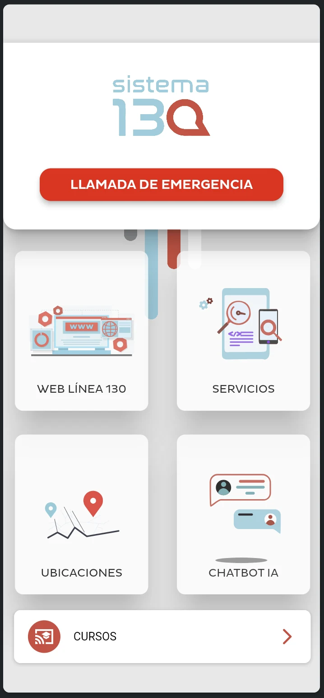
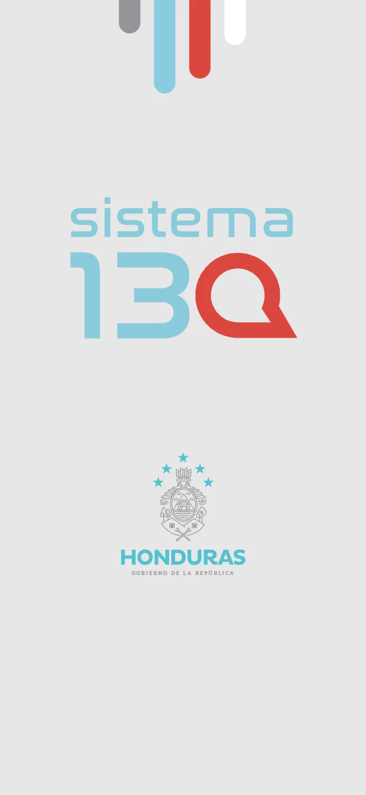
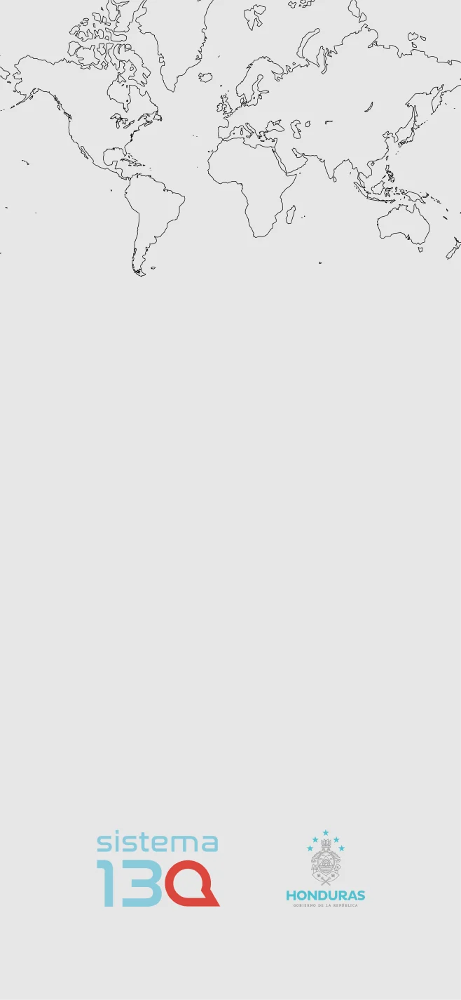
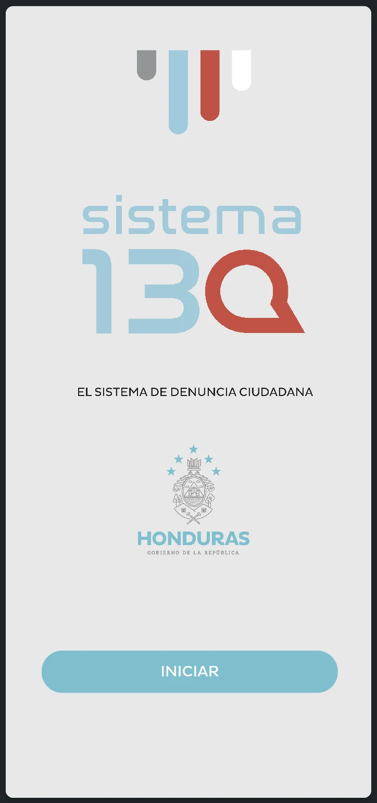
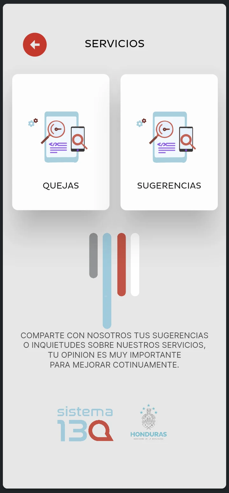

Contexto
El proyecto facilita el acceso desde el móvil a los servicios del Sistema 130 de Honduras, incluyendo denuncias, quejas, sugerencias y recursos de consulta.
HONDURAS · APLICACIÓN MÓVIL
Una puerta de entrada a la
participación ciudadana.
Una app que reúne servicios, orientación, documentos y ubicación en una misma experiencia. Mi participación: desarrollo de la aplicación móvil, chatbot e integración de servicios digitales.

01 / EL PROYECTO
El proyecto facilita el acceso desde el móvil a los servicios del Sistema 130 de Honduras, incluyendo denuncias, quejas, sugerencias y recursos de consulta.
Desarrollo de las pantallas y su navegación, incorporación de recursos gráficos e integración de formularios, documentos y chatbot en la app.
El inicio y los menús conservan la interfaz del proyecto original. Esta versión permite recorrer sus apartados con servicios simulados y contenido de muestra.
02 / RECORRIDO INTERACTIVO
Inicia la demo para recorrer la app aquí mismo. Es una versión de exhibición: no envía denuncias ni conecta con servicios institucionales.
ABRIR DEMO EN UNA PÁGINA COMPLETA ↗03 / RECURSOS VISUALES
Una selección de materiales incluidos en el proyecto: identidad, composición de inicio y elementos de orientación. Se muestran juntos para explicar cómo acompañan la experiencia de la app.



Recursos originales del archivo compartido. Las pantallas de formularios y chatbot de la demo contienen ejemplos añadidos para esta versión de portafolio.
04 / INTERFAZ
Capturas originales compartidas junto con el proyecto.

